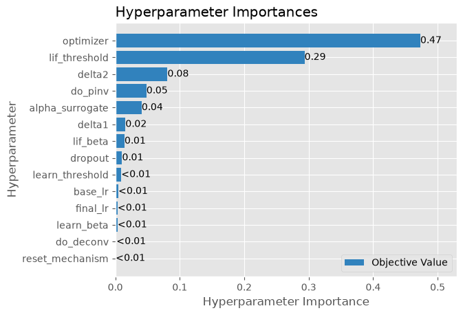
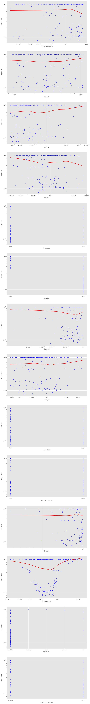

[1]:
from mnesis_boilerplate import torch, pd, sns, plt, data_cache, RECOMPUTE, DEBUG, phi, loss_fn, Params
from mnesis_boilerplate import printfig, pprint
from mnesis_chains import StochasticSpikingPattern, HD_SNN
# RECOMPUTE = True
datetag = '2026-08-06'
Using device: mps
[2]:
opt_dict = dict(num_epochs=128)
opt = Params(**opt_dict)
opt
[2]:
Params(datetag='2026-08-06', N_neuron=1024, num_delay=41, N_pattern=16, N_time=1000, N_pretime=50, p_A=0.00016, p_flip=0.01, seed=2018, lif_beta=0.8, lif_threshold=0.72, learn_beta=False, learn_threshold=False, do_pinv=True, do_deconv=True, num_epochs=128, num_warmup_epochs=16, base_lr=0.03, final_lr=0.001, delta1=0.01, delta2=1e-05, dropout=0.25, alpha_surrogate=5.0, surrogate_name='FastSigmoid', loss_name='SpikeF1scoreLoss', reset_mechanism='subtract', optimizer='sgd', verbose=False, fig_width=30, fig_height=15, phi=1.61803, N_time_show=1000, N_neuron_show=1024, N_scan=36)
optimizing learning parameters with optuna¶
[3]:
pprint('Optimizing learning parameters with Optuna: running hyperparameter search and analyzing best trials')
===================================================================================================
Optimizing learning parameters with Optuna: running hyperparameter search and analyzing best trials
===================================================================================================
[4]:
import optuna
optuna.logging.set_verbosity(optuna.logging.WARNING)
import warnings
warnings.filterwarnings("ignore", category=optuna.exceptions.ExperimentalWarning,)
optuna_filename = data_cache / f"{opt.datetag}_optuna.sqlite3"
lock_filename, study = optuna_filename.with_suffix('.lock'), 1
if RECOMPUTE:
optuna_filename.unlink(missing_ok=True) # FORCING RECOMPUTE
lock_filename.unlink(missing_ok=True) # FORCING RECOMPUTE
# lock_filename.unlink(missing_ok=True) # FORCING RECOMPUTE
%ls -l {optuna_filename}
-rw-r-----@ 1 laurent staff 577536 21 août 21:31 ../cached_data/2026-08-06_optuna.sqlite3
[5]:
lock_filename.exists()
[5]:
False
[6]:
def objective(trial):
new_opt = Params(**opt_dict)
new_opt.do_deconv = trial.suggest_categorical('do_deconv', [True, False])
new_opt.do_pinv = trial.suggest_categorical('do_pinv', [True, False])
new_opt.learn_beta = trial.suggest_categorical('learn_beta', [True, False])
new_opt.learn_threshold = trial.suggest_categorical('learn_threshold', [True, False])
new_opt.reset_mechanism = trial.suggest_categorical('reset_mechanism', ['zero', 'subtract'])
new_opt.optimizer = trial.suggest_categorical('optimizer', ['adamw', 'rmsprop', 'adadelta', 'sgd', 'adam']) # 'adagrad', 'sparseadam',
# new_opt.surrogate_name = trial.suggest_categorical('surrogate_name', ['FastSigmoid', 'LeakySpikeOperator', 'ATan', 'Sigmoid', 'SpikeRateEscape'])
# new_opt.loss_name = trial.suggest_categorical('loss_name', [ 'SpikeF1scoreLoss', 'MSELoss', 'L1Loss'])
new_opt.lif_beta = trial.suggest_float('lif_beta', 0, 1)
scale = 10
scale = 3.618
new_opt.alpha_surrogate = trial.suggest_float('alpha_surrogate', new_opt.alpha_surrogate / scale, new_opt.alpha_surrogate * scale, log=True)
new_opt.base_lr = trial.suggest_float('base_lr', new_opt.base_lr / scale, new_opt.base_lr * scale, log=True)
new_opt.final_lr = trial.suggest_float('final_lr', new_opt.final_lr / scale, new_opt.final_lr * scale, log=True)
new_opt.delta1 = trial.suggest_float('delta1', new_opt.delta1 / scale, min((new_opt.delta1 * scale, .99)), log=True)
new_opt.delta2 = trial.suggest_float('delta2', new_opt.delta2 / scale, min((new_opt.delta2 * scale, .99)), log=True)
new_opt.dropout = trial.suggest_float('dropout', 0, 1)
new_opt.lif_threshold = trial.suggest_float('lif_threshold', new_opt.lif_threshold / scale, new_opt.lif_threshold * scale, log=True)
try:
hd = HD_SNN(new_opt, StochasticSpikingPattern())
hd.update_weight()
hd.learn_model(verbose=False)
with torch.no_grad():
# draw causes (SMs) - hidden to the observer
target_ =hd.pattern_object()
input_spikes = hd.get_input_spikes(target=target_)
_, _, spikes = hd.forward_pass(input_spikes)
spikes_ = spikes[:, :, (hd.opt.N_pretime+hd.opt.num_delay):(hd.opt.N_time+hd.opt.N_pretime)]
loss_val = loss_fn(spikes_, target_[:, :, hd.opt.num_delay:])
return loss_val.item()
except Exception as e:
print(f"Error occurred: {e}")
return 1.
N_optuna_scan = 100
N_optuna_scan = 16
N_optuna_scan = 1000
N_optuna_scan = 200 // DEBUG**2
if not lock_filename.exists():
# 3. Create a study object and optimize the objective function.
study = optuna.create_study(
storage=f"sqlite:///{str(optuna_filename)}",
sampler=optuna.samplers.TPESampler(multivariate=True, warn_independent_sampling=False),
direction="minimize",
load_if_exists=True,
study_name=opt.datetag,
)
if len(study.trials) < N_optuna_scan:
print(f"Optuna file not found or unlocked: {optuna_filename}, starting optimization.")
lock_filename.touch(exist_ok=True)
if len(study.trials)>0:
print("So far, Best params: ", study.best_params, end=', ')
print("Best value: ", study.best_value)
print(
f"Starting optimization on {max(N_optuna_scan - len(study.trials), 0)} trials with {len(study.trials)} existing trials."
)
study.optimize(objective, n_trials=max((N_optuna_scan - len(study.trials), 0)), n_jobs=1, show_progress_bar=True)
lock_filename.unlink(missing_ok=True)
else:
print(f"Optuna file is locked: {lock_filename}, passing.")
study = None
/var/folders/qt/n82pbkv93fjb7bpt0pj1992w0000gn/T/ipykernel_7675/1999869513.py:53: FutureWarning: `warn_independent_sampling` has been deprecated in v4.9.0. This feature will be removed in v6.0.0. See https://github.com/optuna/optuna/releases/tag/v4.9.0.
sampler=optuna.samplers.TPESampler(multivariate=True, warn_independent_sampling=False),
[7]:
if not study is None:
study = optuna.load_study(storage=f"sqlite:///{str(optuna_filename)}", study_name=opt.datetag)
else:
print("Study is None (likely due to lock), skipping load.")
[8]:
if not study is None:
print(f'number of trials in study: {len(study.trials)}')
else:
print("Study is None, skipping trials display.")
number of trials in study: 200
[9]:
if not study is None:
print(50 * "-.")
print("Best params: ", study.best_params)
print("Best value: ", study.best_value)
# print("Best Trial params: ", study.best_trial.params)
else:
print("Study is None, skipping best-trial summary.")
-.-.-.-.-.-.-.-.-.-.-.-.-.-.-.-.-.-.-.-.-.-.-.-.-.-.-.-.-.-.-.-.-.-.-.-.-.-.-.-.-.-.-.-.-.-.-.-.-.-.
Best params: {'do_deconv': False, 'do_pinv': True, 'learn_beta': True, 'learn_threshold': True, 'reset_mechanism': 'zero', 'optimizer': 'adadelta', 'lif_beta': 0.3908868701607411, 'alpha_surrogate': 15.501152497795253, 'base_lr': 0.02625155045837046, 'final_lr': 0.000445775962832633, 'delta1': 0.00733363582831702, 'delta2': 6.8686583352162765e-06, 'dropout': 0.9141969949135537, 'lif_threshold': 0.83123134108247}
Best value: 0.07652860879898071
[10]:
if not study is None:
import numpy as np
print("=" * 60)
print("OPTUNA STUDY ANALYSIS")
print("=" * 60)
# 1. Parameter Importances (Ranking of Most Important Parameters)
print("\n[1] PARAMETER IMPORTANCE RANKING:")
try:
importance_dict = optuna.importance.get_param_importances(study)
for param, imp in sorted(importance_dict.items(), key=lambda item: item[1], reverse=True):
print(f"{param:<30}: {imp:.3f}")
except Exception as e:
print("Error computing importance:", str(e))
# 2. Best Value and Confidence Intervals for Each Parameter
print("\n[2] BEST VALUES WITH CONFIDENCE INTERVALS:")
if not study.trials:
print("No trials found.")
else:
best_trial = study.best_trial
print(f"\nBest Objective Value: {best_trial.value:.5f}")
# Collect all valid trials
completed_trials = [t for t in study.trials if t.state == optuna.trial.TrialState.COMPLETE]
if not completed_trials:
print("No completed trials available.")
else:
# Get top 10% performing trials for confidence interval estimation
top_trials = sorted(completed_trials, key=lambda t: t.value, reverse=True)[:max(1, len(completed_trials) // 10)]
params_all = {pname: [] for pname in best_trial.params}
for trial in top_trials:
for pname in params_all:
if pname in trial.params:
params_all[pname].append(trial.params[pname])
print("\nEstimated Confidence Intervals (Top 10% Trials):")
for pname in best_trial.params:
vals = params_all.get(pname, [])
if vals:
# Check if values are boolean
if isinstance(vals[0], bool):
# For boolean parameters, show mode and frequency
true_count = sum(1 for v in vals if v)
false_count = len(vals) - true_count
most_common = True if true_count >= false_count else False
print(f"{pname}\t: Best={best_trial.params[pname]},\t "
f"Most Common={most_common}, True: {true_count}/{len(vals)} ({100*true_count/len(vals):.1f}%)")
else:
# For numeric parameters, compute percentiles
try:
low = np.percentile(vals, 5)
high = np.percentile(vals, 95)
median = np.median(vals)
print(f"{pname}\t: Best={best_trial.params[pname]:3e},\t "
f"Median={median:>8.3e}, 90% CI=[{low:>8.3e}, {high:>8.3e}]")
except Exception as e:
print(f"{pname}\t: Best={best_trial.params[pname]},\t "
f"Error computing stats: {str(e)}")
else:
print(f"{pname:<30}: No data")
print("\n" + "=" * 60)
============================================================
OPTUNA STUDY ANALYSIS
============================================================
[1] PARAMETER IMPORTANCE RANKING:
optimizer : 0.465
lif_threshold : 0.295
delta2 : 0.097
do_pinv : 0.048
lif_beta : 0.018
alpha_surrogate : 0.017
delta1 : 0.013
learn_threshold : 0.012
dropout : 0.011
learn_beta : 0.009
base_lr : 0.005
final_lr : 0.004
reset_mechanism : 0.003
do_deconv : 0.003
[2] BEST VALUES WITH CONFIDENCE INTERVALS:
Best Objective Value: 0.07653
Estimated Confidence Intervals (Top 10% Trials):
do_deconv : Best=False, Most Common=True, True: 11/20 (55.0%)
do_pinv : Best=True, Most Common=True, True: 18/20 (90.0%)
learn_beta : Best=True, Most Common=True, True: 15/20 (75.0%)
learn_threshold : Best=True, Most Common=False, True: 7/20 (35.0%)
reset_mechanism : Best=zero, Error computing stats: unsupported operand type(s) for -: 'numpy.str_' and 'numpy.str_'
optimizer : Best=adadelta, Error computing stats: unsupported operand type(s) for -: 'numpy.str_' and 'numpy.str_'
lif_beta : Best=3.908869e-01, Median=7.323e-01, 90% CI=[4.231e-01, 9.719e-01]
alpha_surrogate : Best=1.550115e+01, Median=8.265e+00, 90% CI=[3.883e+00, 1.566e+01]
base_lr : Best=2.625155e-02, Median=4.113e-02, 90% CI=[1.152e-02, 8.705e-02]
final_lr : Best=4.457760e-04, Median=7.930e-04, 90% CI=[4.174e-04, 1.748e-03]
delta1 : Best=7.333636e-03, Median=5.975e-03, 90% CI=[3.135e-03, 1.704e-02]
delta2 : Best=6.868658e-06, Median=7.359e-06, 90% CI=[3.798e-06, 1.603e-05]
dropout : Best=9.141970e-01, Median=6.033e-01, 90% CI=[2.375e-01, 9.357e-01]
lif_threshold : Best=8.312313e-01, Median=1.166e+00, 90% CI=[3.469e-01, 1.759e+00]
============================================================
[11]:
if not study is None:
import optuna.visualization.matplotlib as vis
vis.plot_param_importances(study)
else:
print("Study is None, skipping parameter-importance plot.")

[12]:
if study is not None:
params = sorted({k for t in study.trials for k in t.params})
fig, axes = plt.subplots(len(params), 1, sharey=True)
# Garantit un itérable même s'il n'y a qu'un seul paramètre
if len(params) == 1:
axes = [axes]
for ax, pname in zip(axes, params):
xs = [t.params[pname] for t in study.trials if pname in t.params]
ys = [t.value for t in study.trials if pname in t.params]
df = pd.DataFrame({"x": xs, "y": ys})
# Détection explicite du cas binaire (ex: do_deconv, do_pinv)
unique_vals = set(df["x"].dropna().tolist())
is_binary = unique_vals.issubset({True, False, 0, 1}) and len(unique_vals) <= 2
is_numeric = pd.api.types.is_numeric_dtype(df["x"])
if is_binary:
df["x"] = df["x"].astype(bool).map({False: "False", True: "True"})
# ax.scatter(df["x"], df["y"], s=24, alpha=0.8, color="tab:blue", label="Trials")
elif is_numeric:
if len(df["x"].unique()) > 1:
sns.regplot(
x="x", y="y", data=df, ax=ax, lowess=True, color="red",
line_kws={"lw": 2, "label": "Tendance (LOWESS)"}, scatter=False
)
# ax.scatter(df["x"], df["y"], s=20, alpha=0.7, color="blue", label="Trials") TODO propagate to other optuna plots
# L'échelle log sur x n'est valide que pour des valeurs strictement positives
if (df["x"] > 0).all():
ax.set_xscale("log")
else:
df["x"] = df["x"].astype(str)
ax.scatter(df["x"], df["y"], s=20, alpha=0.7, color="blue", label="Trials")
ax.set_xlabel(pname)
ax.set_ylabel("Objective")
ax.set_yscale("log")
printfig(fig, 'optuna', fig_width=opt.fig_width, fig_height= opt.fig_width / phi * len(params), figpath=None)
# plt.tight_layout()
else:
print("Study is None, skipping diagnostic plots.")
